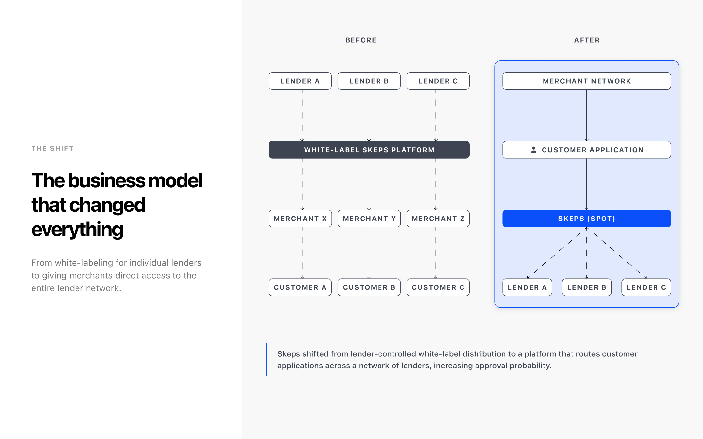
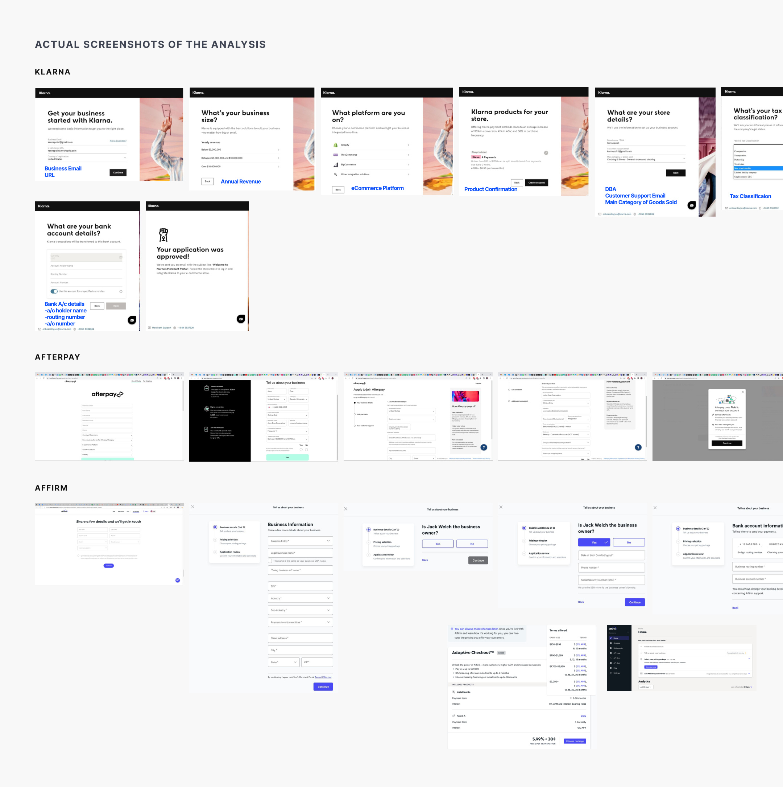
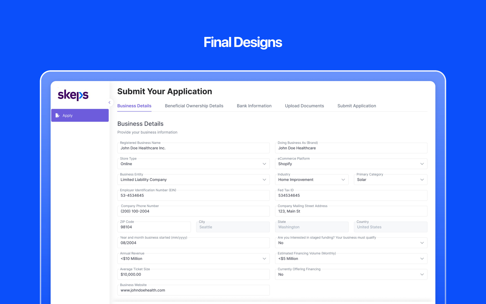
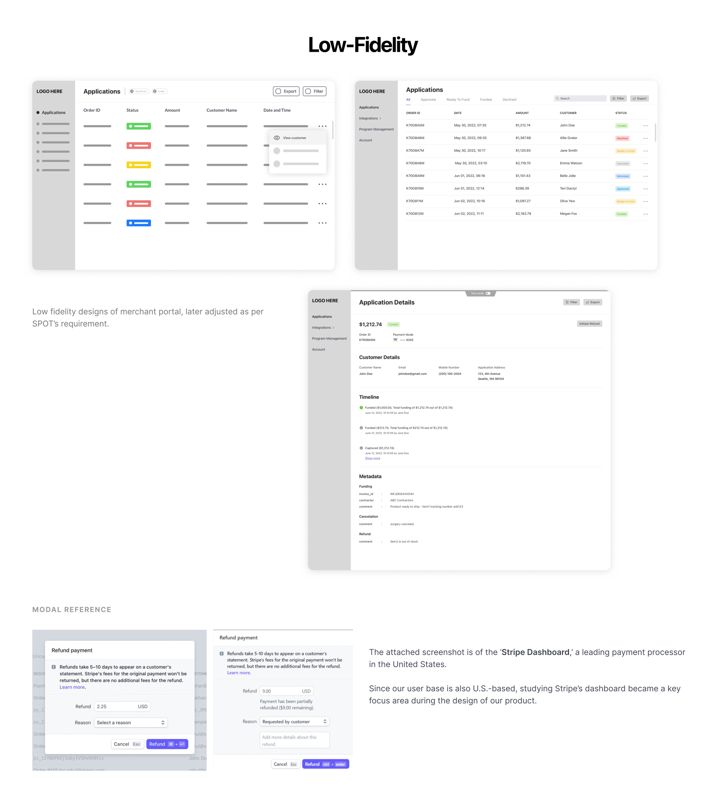
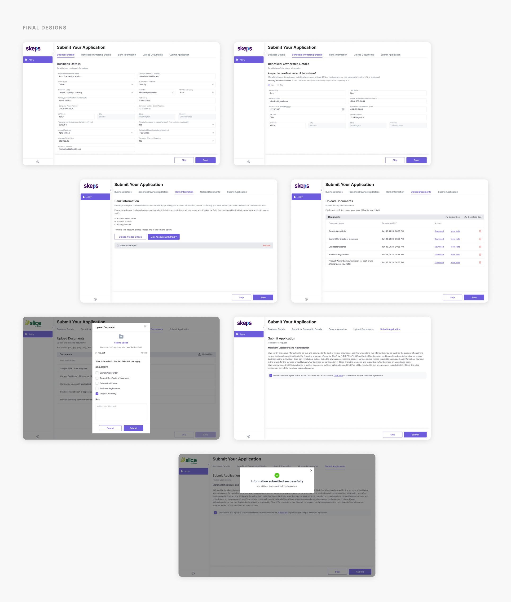
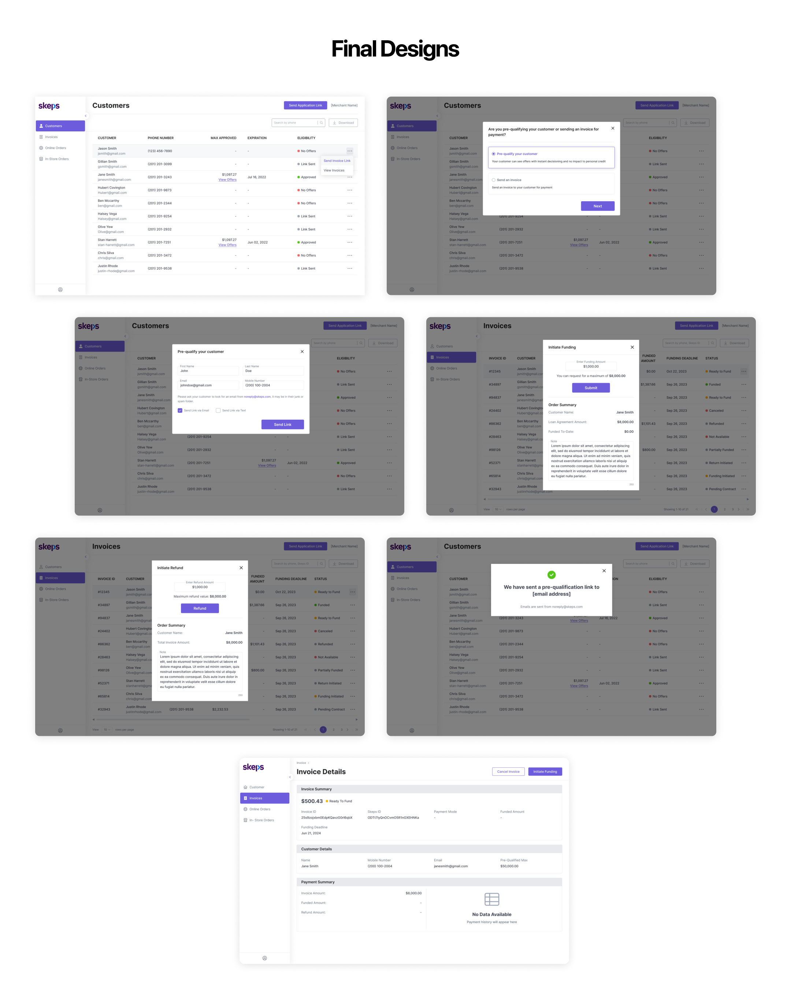
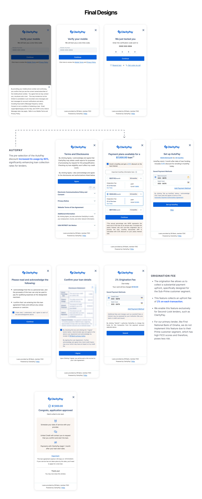
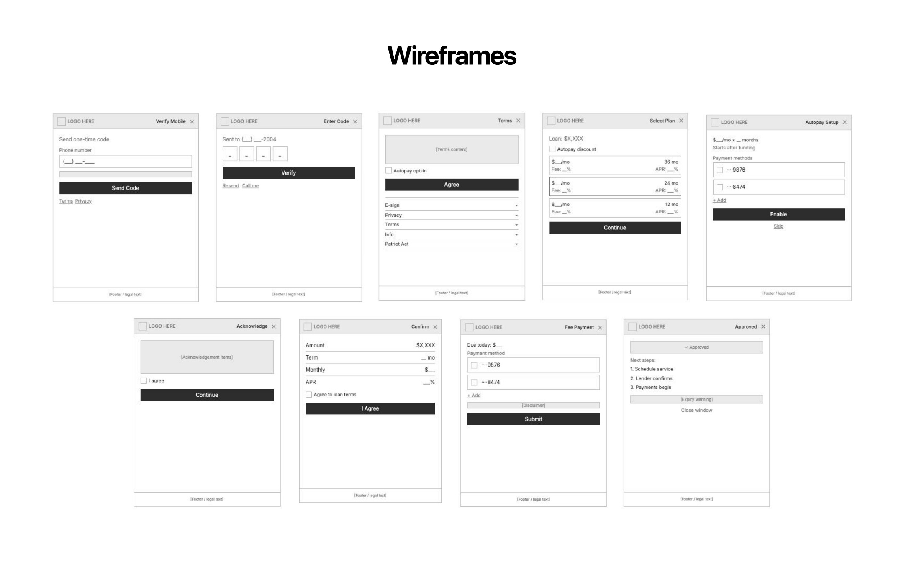
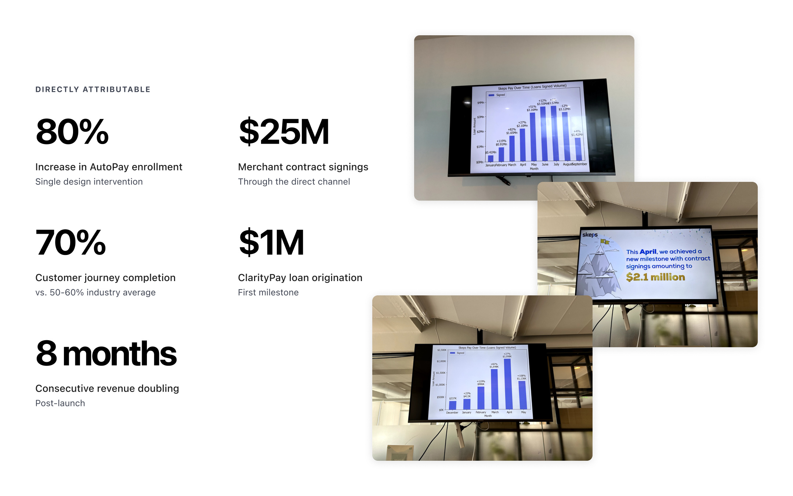

Skeps started as a white-label lending provider: lenders owned the merchant relationships, Skeps powered the technology behind the scenes. The company decided to flip this model with SPOT (Skeps Platform for Omnichannel Transactions), moving from middleware to a merchant-facing platform with direct distribution.
This wasn't a feature update. It was a business model change that required three entirely new product surfaces, designed and shipped in two months.

Every dollar came through lender partnerships. If a lender left, the merchants went with them. Growth was gated by someone else's sales pipeline.
White-label margins shrink as lenders gain leverage. Each contract renewal was a negotiation where Skeps had less power.
The technology was strong, but any lender could switch to another provider. Without direct merchant relationships, Skeps was replaceable.
A standalone application flow replacing manual, sales-led onboarding with a scalable self-serve experience.
The day-to-day dashboard where merchants manage customers, invoices, funding, and refunds.
The embedded financing flow customers interact with at checkout, supporting multi-lender waterfall routing.
Two months meant no room for a full discovery sprint. I built the research around two fast channels: competitive analysis of Klarna, Afterpay, and Affirm to understand market patterns, and guerrilla testing with internal stakeholders who had direct merchant exposure.
This wasn't ideal, but it was the best information I could get in the time I had. Three insights came out of this, each tied to a commercial outcome.

Every competitor gates their flow: check eligibility first, then show what's available. This means customers who don't qualify bounce immediately with zero investment in the product.
I inverted the sequence. The SPOT journey collects lightweight intent signals (phone, OTP) before running credit checks. By the time a customer hits a qualification wall, they've already invested enough to try again or accept a secondary offer.
This isn't deception. The customer can exit at any step. But the psychological investment of even a 30-second interaction changes the calculus of abandonment.
No competitor exposes lender-matching logic during onboarding. The merchant doesn't need to know which lender they're connected to, they need to know their customers will get approved.
Onboarding collects annual revenue as a simple band selection (not a precise number) because it feeds our matching algorithm. Adding a new lender doesn't change the merchant experience.
From sales-led to self-serve, without losing trust.

US merchants already live in Stripe, Square, and similar tools. I aligned SPOT's portal architecture with Stripe's patterns; left navigation, data hierarchy, action-oriented layouts. Not copying, but reducing the cognitive cost of adopting a new tool.
Existing merchants moving from legacy lender-branded setups would find the new portal structurally familiar, reducing support load at scale.
Designing for throughput, not just usability.
New merchants (never seen Skeps) and migrating merchants (used to lender-branded versions) needed the same interface. I designed SPOT's IA to be consistent with existing dashboard patterns, a deliberate trade-off.
I gave up a blank-slate rethink in exchange for migration continuity and shared components that reduced build time.
Migration went through with no significant support escalations.
Maps to what merchants care about: people and money, split by channel. I scoped out analytics, settings, and reporting from V1. Clarity of purpose at launch over feature coverage.
The early design emphasized the "Ready to Fund" amount, distracting from the primary task, entering the funding amount and adding unnecessary cognitive load. The hierarchy was flipped to prioritize the input field, and removing excess information.



Multi-lender routing, invisible to the customer.
When a customer applies for financing through a SPOT merchant, the system runs a waterfall: application goes to the primary lender, if rejected, silently falls through to a secondary lender.
The customer never feels the rejection, they only see the best available outcome.
Lenders and legal required extensive disclosures, consent forms, privacy notices. The pressure was to front-load everything, dump disclosures early, check the legal boxes, move on.
I pushed back. Front-loading compliance content before the customer has any context on what they're getting kills conversion.
Compliance surfaces appear at the moment of intent. Terms and disclosures show up after the customer has seen their offers and expressed interest, not before.
This placement respects both the regulation (everything is disclosed before commitment) and the psychology (the customer has enough context to engage).
Lenders required AutoPay to be presented to every customer. The default approach: a toggle or opt-in checkbox.
I reframed it: pre-selected checkbox on the offer selection screen, paired with a visible 0.5% interest discount. Still fully compliant, the customer can uncheck it. But the framing shifts from obligation to benefit.
For second-look lenders like ClarityPay, a 2% origination fee was required. Rather than hiding it in fine print, I surfaced it transparently, amount shown clearly, "Due Today" prominently marked.
This step only appears for sub-prime flows. Prime lender customers never see it. This segmentation required understanding each lender tier's economics, not just UX.



A company-wide outcome across product, sales, partnerships, and market timing. My contribution: the product surfaces through which the majority of this volume flows.
SPOT shifted Skeps from lender-dependent distribution to a direct merchant acquisition model.
White-label margins became platform margins. The company gained a competitive moat it didn't have before, a direct merchant network with multi-lender access that no individual lender relationship could replicate.
We designed based on competitive analysis, domain knowledge, and guerrilla testing. It worked, but I'd push for direct merchant interviews if I had the runway. The next iteration deserves richer qualitative input.
The AutoPay pre-selection was a behavioral hypothesis that paid off. But it was a bet. Given more time, I'd have run A/B tests on pre-selection vs. opt-in, discount framing variations, and origination fee placement.
A recurring rhythm of merchant check-ins post-launch, even monthly 15-minute calls with 3-5 active merchants, would have surfaced friction points faster than support tickets.
I'm currently exploring Senior / Lead Product Designer roles. If you're building something complex and need someone who can own the design end-to-end, let's talk.